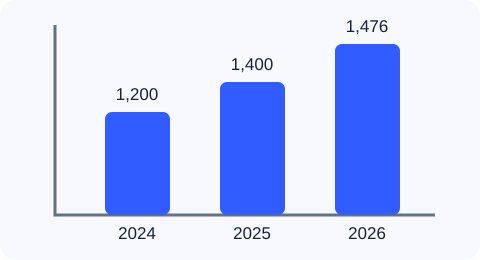

Student: Pandey Aayush · Student ID: 202537201
1. What is alternative text?
Alternative text describes the purpose or meaning of an image for people who use screen readers or cannot view the image. The description should depend on the image's context, not just its appearance.
2. Image examples
Alt text: "University campus building with a central entrance and rows of windows."
Describe the meaningful content.
Alt text: Empty string: alt=""
Decorative images should be ignored by screen readers.
Alt text: "Student Budget Tracker home"
The description should explain the link destination or action.

Alt text: Summarize the trend and important values.
Provide the exact data in nearby text when details matter.
3. Before and after example
Before — missing description
No alt attribute: assistive technology may announce the filename.
After — meaningful description
The image purpose is communicated to screen-reader users.
4. Test the alt text
Use the button to check the image descriptions on this page.
5. Conclusion
Informative images need useful descriptions, decorative images should use an empty alt attribute, and linked images should explain their destination. Charts need concise descriptions of the key pattern and data, with detailed values available as text when necessary.